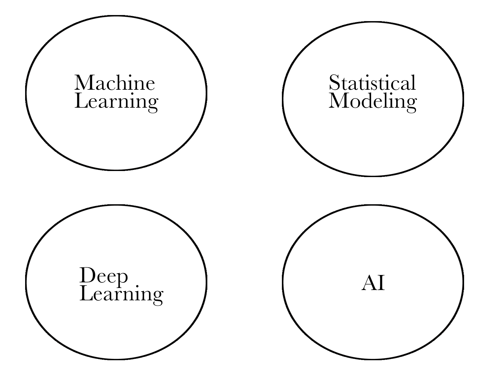
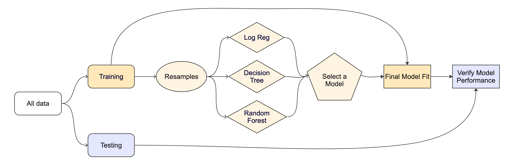
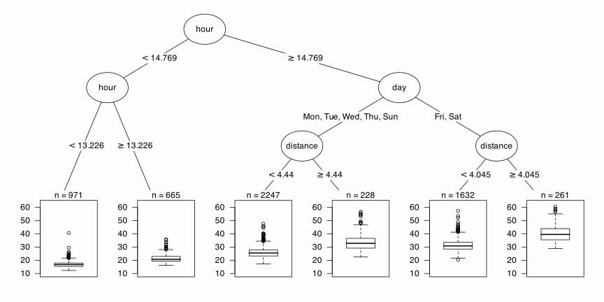
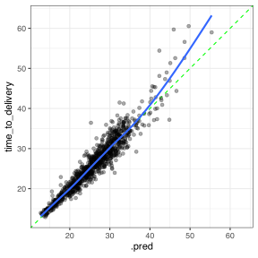

library(tidymodels)
#> ── Attaching packages ────────────────────────────────────── tidymodels 1.2.0 ──
#> ✔ broom 1.0.6 ✔ recipes 1.1.0
#> ✔ dials 1.3.0 ✔ rsample 1.2.1
#> ✔ dplyr 1.1.4 ✔ tibble 3.2.1
#> ✔ ggplot2 3.5.1 ✔ tidyr 1.3.1
#> ✔ infer 1.0.7 ✔ tune 1.2.1
#> ✔ modeldata 1.4.0 ✔ workflows 1.1.4
#> ✔ parsnip 1.2.1 ✔ workflowsets 1.1.0
#> ✔ purrr 1.0.2 ✔ yardstick 1.3.1
#> ── Conflicts ───────────────────────────────────────── tidymodels_conflicts() ──
#> ✖ purrr::discard() masks scales::discard()
#> ✖ dplyr::filter() masks stats::filter()
#> ✖ dplyr::lag() masks stats::lag()
#> ✖ recipes::step() masks stats::step()
#> • Use suppressPackageStartupMessages() to eliminate package startup messages
tidymodels_prefer()Introduction to Machine Learning with tidymodels
Max Kuhn and Simon Couch
👋 Who am I?

👋 Who are we?


👋 Who are you?
Ypu have a good working knowledge of R, and be familiar with basic data wrangling and visualisation as described in R for Data Science by Wickham and Grolemund (2016).
What is tidymodels?
The tidymodels framework is a collection of packages for modeling and machine learning using tidyverse principles.
- tidymodels.org
…so what is modeling and machine learning?
BYO Venn Diagram
The tidymodels framework is a collection of packages for safe, performant, and expressive supervised predictive modeling on tabular data.
🥴
The tidymodels framework is a collection of packages for safe, performant, and expressive supervised predictive modeling on tabular data.
🥴
The tidymodels framework is a collection of packages for safe, performant, and expressive supervised predictive modeling on tabular data.
🥴
The tidymodels framework is a collection of packages for safe, performant, and expressive supervised predictive modeling on tabular data.
🥴
The tidymodels framework is a collection of packages for safe, performant, and expressive supervised predictive modeling on tabular data.
🥴
Think about the modeling problem, not the syntax.

The Meta-package
Why tidymodels?
Why tidymodels? Consistency
How many different ways can you think of to fit a linear model in R?
The blessing:
- Many statistical modeling practitioners implement methods in R
The curse:
- Many statistical modeling practitioners implement methods in R
Why tidymodels? Consistency
mtcars
#> mpg cyl disp hp drat wt qsec vs am gear
#> Mazda RX4 21.0 6 160.0 110 3.90 2.620 16.46 0 1 4
#> Mazda RX4 Wag 21.0 6 160.0 110 3.90 2.875 17.02 0 1 4
#> Datsun 710 22.8 4 108.0 93 3.85 2.320 18.61 1 1 4
#> Hornet 4 Drive 21.4 6 258.0 110 3.08 3.215 19.44 1 0 3
#> Hornet Sportabout 18.7 8 360.0 175 3.15 3.440 17.02 0 0 3
#> Valiant 18.1 6 225.0 105 2.76 3.460 20.22 1 0 3
#> Duster 360 14.3 8 360.0 245 3.21 3.570 15.84 0 0 3
#> Merc 240D 24.4 4 146.7 62 3.69 3.190 20.00 1 0 4
#> Merc 230 22.8 4 140.8 95 3.92 3.150 22.90 1 0 4
#> Merc 280 19.2 6 167.6 123 3.92 3.440 18.30 1 0 4
#> Merc 280C 17.8 6 167.6 123 3.92 3.440 18.90 1 0 4
#> Merc 450SE 16.4 8 275.8 180 3.07 4.070 17.40 0 0 3
#> Merc 450SL 17.3 8 275.8 180 3.07 3.730 17.60 0 0 3
#> Merc 450SLC 15.2 8 275.8 180 3.07 3.780 18.00 0 0 3
#> Cadillac Fleetwood 10.4 8 472.0 205 2.93 5.250 17.98 0 0 3
#> Lincoln Continental 10.4 8 460.0 215 3.00 5.424 17.82 0 0 3
#> Chrysler Imperial 14.7 8 440.0 230 3.23 5.345 17.42 0 0 3
#> Fiat 128 32.4 4 78.7 66 4.08 2.200 19.47 1 1 4
#> Honda Civic 30.4 4 75.7 52 4.93 1.615 18.52 1 1 4
#> Toyota Corolla 33.9 4 71.1 65 4.22 1.835 19.90 1 1 4
#> Toyota Corona 21.5 4 120.1 97 3.70 2.465 20.01 1 0 3
#> Dodge Challenger 15.5 8 318.0 150 2.76 3.520 16.87 0 0 3
#> AMC Javelin 15.2 8 304.0 150 3.15 3.435 17.30 0 0 3
#> Camaro Z28 13.3 8 350.0 245 3.73 3.840 15.41 0 0 3
#> Pontiac Firebird 19.2 8 400.0 175 3.08 3.845 17.05 0 0 3
#> Fiat X1-9 27.3 4 79.0 66 4.08 1.935 18.90 1 1 4
#> Porsche 914-2 26.0 4 120.3 91 4.43 2.140 16.70 0 1 5
#> Lotus Europa 30.4 4 95.1 113 3.77 1.513 16.90 1 1 5
#> Ford Pantera L 15.8 8 351.0 264 4.22 3.170 14.50 0 1 5
#> Ferrari Dino 19.7 6 145.0 175 3.62 2.770 15.50 0 1 5
#> Maserati Bora 15.0 8 301.0 335 3.54 3.570 14.60 0 1 5
#> Volvo 142E 21.4 4 121.0 109 4.11 2.780 18.60 1 1 4
#> carb
#> Mazda RX4 4
#> Mazda RX4 Wag 4
#> Datsun 710 1
#> Hornet 4 Drive 1
#> Hornet Sportabout 2
#> Valiant 1
#> Duster 360 4
#> Merc 240D 2
#> Merc 230 2
#> Merc 280 4
#> Merc 280C 4
#> Merc 450SE 3
#> Merc 450SL 3
#> Merc 450SLC 3
#> Cadillac Fleetwood 4
#> Lincoln Continental 4
#> Chrysler Imperial 4
#> Fiat 128 1
#> Honda Civic 2
#> Toyota Corolla 1
#> Toyota Corona 1
#> Dodge Challenger 2
#> AMC Javelin 2
#> Camaro Z28 4
#> Pontiac Firebird 2
#> Fiat X1-9 1
#> Porsche 914-2 2
#> Lotus Europa 2
#> Ford Pantera L 4
#> Ferrari Dino 6
#> Maserati Bora 8
#> Volvo 142E 2Why tidymodels? Consistency
Why tidymodels? Consistency
Why tidymodels? Consistency
Why tidymodels? Consistency
Why tidymodels? Safety1
Why tidymodels? Safety1
- Overfitting leads to analysts believing models are more performant than they actually are.
- A 2023 review found data leakage to be “a widespread failure mode in machine-learning (ML)-based science.”
- Implementations of the same machine learning model give differing results, resulting in irreproducibility of modeling results.
Why tidymodels? Safety
Some of the resistance I’ve seen to tidymodels comes from a place of “This makes it too easy- you’re not thinking carefully about what the code is doing!” But I think this is getting it backwards.
By removing the burden of writing procedural logic, I get to focus on scientific and statistical questions about my data and model.
Why tidymodels? Completeness
Why tidymodels? Completeness
Built-in support for 99 machine learning models!
#> # A tibble: 99 × 2
#> name engine
#> <chr> <chr>
#> 1 boost_tree C5.0
#> 2 boost_tree h2o
#> 3 boost_tree h2o_gbm
#> 4 boost_tree lightgbm
#> 5 boost_tree mboost
#> 6 boost_tree spark
#> 7 boost_tree xgboost
#> 8 null_model parsnip
#> 9 svm_linear LiblineaR
#> 10 svm_linear kernlab
#> # ℹ 89 more rowsWhy tidymodels? Completeness
Built-in support for 102 data pre-processing techniques!
#> # A tibble: 102 × 1
#> name
#> <chr>
#> 1 step_bagimpute
#> 2 step_classdist_shrunken
#> 3 step_impute_mode
#> 4 add_step
#> 5 step
#> 6 print_step
#> 7 step_dummy
#> 8 step_window
#> 9 step_nnmf
#> 10 step_intercept
#> # ℹ 92 more rowsWhy tidymodels? Extensibility
Can’t find the technique you need?

Why tidymodels? Extensibility
Why tidymodels? Deployability
Tightly integrated with Posit Workbench and Connect
- Workbench: scalable, on-demand computational resources
- Connect: share work with collaborators and practitioners
The vetiver package makes it extremely easy to publish your model.
Applied example 🍕🍕
Food deliveries
These data are in the modeldata package.
glimpse(deliveries)
#> Rows: 10,012
#> Columns: 31
#> $ time_to_delivery <dbl> 16.1106, 22.9466, 30.2882, 33.4266, 27.2255…
#> $ hour <dbl> 11.899, 19.230, 18.374, 15.836, 19.619, 12.…
#> $ day <fct> Thu, Tue, Fri, Thu, Fri, Sat, Sun, Thu, Fri…
#> $ distance <dbl> 3.15, 3.69, 2.06, 5.97, 2.52, 3.35, 2.46, 2…
#> $ item_01 <int> 0, 0, 0, 0, 0, 1, 0, 0, 0, 0, 0, 0, 0, 1, 0…
#> $ item_02 <int> 0, 0, 0, 0, 0, 0, 0, 0, 0, 2, 0, 0, 0, 1, 0…
#> $ item_03 <int> 2, 0, 0, 0, 0, 0, 1, 1, 0, 1, 0, 0, 0, 0, 1…
#> $ item_04 <int> 0, 0, 0, 0, 1, 1, 1, 0, 0, 0, 1, 0, 1, 0, 0…
#> $ item_05 <int> 0, 0, 1, 0, 0, 0, 0, 0, 0, 0, 0, 0, 0, 0, 0…
#> $ item_06 <int> 0, 0, 0, 0, 0, 0, 0, 1, 0, 0, 0, 0, 0, 0, 0…
#> $ item_07 <int> 0, 0, 0, 0, 1, 1, 0, 0, 1, 0, 0, 0, 0, 0, 0…
#> $ item_08 <int> 0, 0, 0, 0, 0, 0, 0, 1, 0, 0, 1, 0, 1, 0, 0…
#> $ item_09 <int> 0, 0, 0, 0, 0, 1, 0, 0, 0, 0, 0, 0, 1, 0, 1…
#> $ item_10 <int> 1, 0, 0, 0, 0, 0, 0, 0, 0, 0, 0, 1, 0, 0, 0…
#> $ item_11 <int> 1, 0, 0, 0, 1, 1, 0, 0, 0, 0, 0, 0, 0, 0, 0…
#> $ item_12 <int> 0, 0, 0, 1, 0, 0, 0, 0, 0, 1, 0, 0, 0, 0, 0…
#> $ item_13 <int> 0, 0, 0, 0, 0, 0, 0, 0, 0, 0, 0, 0, 0, 0, 0…
#> $ item_14 <int> 0, 0, 0, 0, 1, 0, 0, 0, 0, 0, 0, 0, 0, 0, 0…
#> $ item_15 <int> 0, 0, 0, 0, 0, 0, 0, 0, 1, 0, 0, 0, 0, 0, 0…
#> $ item_16 <int> 0, 0, 0, 0, 0, 0, 0, 0, 0, 0, 0, 0, 0, 0, 0…
#> $ item_17 <int> 0, 0, 0, 0, 0, 0, 0, 0, 0, 1, 0, 0, 0, 0, 0…
#> $ item_18 <int> 0, 1, 0, 0, 0, 0, 0, 0, 0, 1, 0, 0, 0, 0, 0…
#> $ item_19 <int> 0, 0, 0, 0, 0, 0, 0, 0, 0, 0, 0, 0, 0, 0, 0…
#> $ item_20 <int> 0, 0, 1, 0, 0, 0, 0, 0, 0, 0, 0, 0, 0, 0, 0…
#> $ item_21 <int> 0, 0, 0, 0, 0, 0, 0, 1, 0, 0, 0, 0, 0, 0, 0…
#> $ item_22 <int> 0, 0, 0, 0, 0, 1, 1, 0, 0, 1, 0, 0, 0, 1, 0…
#> $ item_23 <int> 0, 0, 0, 0, 0, 0, 0, 0, 0, 0, 0, 0, 0, 0, 0…
#> $ item_24 <int> 0, 0, 1, 0, 0, 1, 0, 0, 0, 0, 0, 0, 0, 0, 0…
#> $ item_25 <int> 0, 0, 0, 0, 0, 0, 0, 0, 0, 0, 1, 0, 0, 0, 0…
#> $ item_26 <int> 0, 0, 0, 0, 0, 0, 0, 0, 1, 0, 0, 1, 0, 0, 0…
#> $ item_27 <int> 0, 0, 0, 1, 1, 0, 0, 0, 0, 0, 0, 1, 1, 0, 0…Investigate the data!
Let’s take 10m and have you explore the data.
Let me know what you think about them. (not a trick question)
10:00 Splitting the data
We typically start by splitting the data into partitions used for modeling and assessment:
Splitting the data (with validation)
Instead, let’s do a 3-way split to include a validation set that we can use before the test set:
(TMwR)
A linear model
mod_spec <- linear_reg()
mod_fit <- mod_spec %>% fit(time_to_delivery ~ ., data = delivery_train)
tidy(mod_fit)
#> # A tibble: 36 × 5
#> term estimate std.error statistic p.value
#> <chr> <dbl> <dbl> <dbl> <dbl>
#> 1 (Intercept) -18.4 0.372 -49.4 0
#> 2 hour 1.78 0.0169 105. 0
#> 3 dayTue 1.02 0.254 4.02 5.77e- 5
#> 4 dayWed 3.46 0.230 15.1 9.52e- 51
#> 5 dayThu 5.04 0.225 22.4 9.71e-108
#> 6 dayFri 6.98 0.220 31.7 1.49e-207
#> 7 daySat 7.82 0.219 35.7 2.81e-259
#> 8 daySun 3.53 0.229 15.4 5.15e- 53
#> 9 distance 2.78 0.0414 67.0 0
#> 10 item_01 1.61 0.140 11.5 2.13e- 30
#> # ℹ 26 more rowsA linear model
# Good:
predict(mod_fit, head(delivery_val, 3))
#> # A tibble: 3 × 1
#> .pred
#> <dbl>
#> 1 12.4
#> 2 27.2
#> 3 20.2
# Better:
augment(mod_fit, head(delivery_val, 3)) %>% select(1:9)
#> # A tibble: 3 × 9
#> .pred .resid time_to_delivery hour day distance item_01 item_02
#> <dbl> <dbl> <dbl> <dbl> <fct> <dbl> <int> <int>
#> 1 12.4 5.62 18.0 12.1 Tue 2.4 0 0
#> 2 27.2 4.31 31.5 16.5 Sat 2.57 0 0
#> 3 20.2 -2.42 17.8 13.2 Fri 2.74 0 0
#> # ℹ 1 more variable: item_03 <int>Does it work?
Measuring performance
There are many metrics that we can use. Let’s go with RMSE and R2:
(TMwR)
Feature engineering
There’s a lot more we can do with this model.
We need better representations of our predictors.
We need recipes! 🧁
Recipes are sequential operations for feature engineering.
(TMwR)
Initializing the recipe
This first call just catalogs the data.
summary(food_rec)
#> # A tibble: 31 × 4
#> variable type role source
#> <chr> <list> <chr> <chr>
#> 1 hour <chr [2]> predictor original
#> 2 day <chr [3]> predictor original
#> 3 distance <chr [2]> predictor original
#> 4 item_01 <chr [2]> predictor original
#> 5 item_02 <chr [2]> predictor original
#> 6 item_03 <chr [2]> predictor original
#> 7 item_04 <chr [2]> predictor original
#> 8 item_05 <chr [2]> predictor original
#> 9 item_06 <chr [2]> predictor original
#> 10 item_07 <chr [2]> predictor original
#> # ℹ 21 more rowsConverting to indicator variables
For any factor predictors, make binary indicators.
There are a lot of recipe steps that can convert categorical predictors to numeric columns (TMwR).
The new columns for day will have default names of day_Tue - day_Sun.
There are many types of recipe selectors.
Splines are the best
Splines are tools that enable linear models to model nonlinear data.
We choose the type of spline function and how many features to use.
- More features, more flexibility
- More features, more risk of overfitting
We’ll focus on natural splines.
(TMwR)
#| label: fig-natural-spline
#| viewerHeight: 600
#| viewerWidth: "100%"
#| standalone: true
library(shiny)
library(patchwork)
library(dplyr)
library(tidyr)
library(ggplot2)
library(splines2)
library(bslib)
library(viridis)
library(modeldata)
data(ames)
ames$Sale_Price <- log10(ames$Sale_Price)
ui <- page_fillable(
theme = bs_theme(bg = "#fcfefe", fg = "#595959"),
padding = "1rem",
layout_columns(
fill = FALSE,
col_widths = breakpoints(sm = c(-3, 6, -3)),
sliderInput(
"spline_df",
label = "# Spline Terms",
min = 3L, max = 30L, step = 2L, value = 3L
), # sliderInput
), # layout_columns
layout_columns(
fill = FALSE,
col_widths = breakpoints(sm = c(-1, 10, -1)),
as_fill_carrier(plotOutput('spline'))
)
)
server <- function(input, output, session) {
light_bg <- "#fcfefe" # from aml4td.scss
grid_theme <- bs_theme(
bg = "#fcfefe", fg = "#595959"
)
# ------------------------------------------------------------------------------
theme_light_bl<- function(...) {
ret <- ggplot2::theme_bw(...)
col_rect <- ggplot2::element_rect(fill = light_bg, colour = light_bg)
ret$panel.background <- col_rect
ret$plot.background <- col_rect
ret$legend.background <- col_rect
ret$legend.key <- col_rect
larger_x_text <- ggplot2::element_text(size = rel(1.25))
larger_y_text <- ggplot2::element_text(size = rel(1.25), angle = 90)
ret$axis.text.x <- larger_x_text
ret$axis.text.y <- larger_y_text
ret$axis.title.x <- larger_x_text
ret$axis.title.y <- larger_y_text
ret$legend.position <- "top"
ret
}
col_rect <- ggplot2::element_rect(fill = light_bg, colour = light_bg)
maybe_lm <- function(x) {
try(lm(y ~ poly(x, input$piecewise_deg), data = x), silent = TRUE)
}
expansion_to_tibble <- function(x, original, prefix = "term ") {
cls <- class(x)[1]
nms <- recipes::names0(ncol(x), prefix)
colnames(x) <- nms
x <- as_tibble(x)
x$variable <- original
res <- tidyr::pivot_longer(x, cols = c(-variable))
if (cls != "poly") {
res <- res[res$value > .Machine$double.eps,]
}
res
}
mult_poly <- function(dat, degree = 4) {
rng <- extendrange(dat$x, f = .025)
grid <- seq(rng[1], rng[2], length.out = 1000)
grid_df <- tibble(x = grid)
feat <- poly(grid_df$x, degree)
res <- expansion_to_tibble(feat, grid_df$x)
# make some random names so that we can plot the features with distinct colors
rand_names <- lapply(1:degree, function(x) paste0(sample(letters)[1:10], collapse = ""))
rand_names<- unlist(rand_names)
rand_names <- tibble(name = unique(res$name), name2 = rand_names)
res <-
dplyr::inner_join(res, rand_names, by = dplyr::join_by(name)) %>%
dplyr::select(-name) %>%
dplyr::rename(name = name2)
res
}
# ------------------------------------------------------------------------------
spline_example <- tibble(y = ames$Sale_Price, x = ames$Latitude)
rng <- extendrange(ames$Latitude, f = .025)
grid <- seq(rng[1], rng[2], length.out = 1000)
grid_df <- tibble(x = grid)
alphas <- 1 / 4
line_wd <- 1.0
base_p <-
spline_example %>%
ggplot(aes(x = x, y = y)) +
geom_point(alpha = 3 / 4, pch = 1, cex = 3) +
labs(x = "Predictor", y = "Outcome") +
theme_light_bl()
output$spline <- renderPlot({
spline_fit <- lm(y ~ naturalSpline(x, df = input$spline_df), data = spline_example)
spline_pred <-
predict(spline_fit, grid_df, interval = "confidence", level = .90) %>%
bind_cols(grid_df)
spline_p <- base_p +
geom_ribbon(
data = spline_pred,
aes(y = NULL, ymin = lwr, ymax = upr),
alpha = 1 / 15) +
geom_line(
data = spline_pred,
aes(y = fit),
col = "red",
linewidth = line_wd)
feature_p <-
naturalSpline(grid_df$x, df = input$spline_df) %>%
expansion_to_tibble(grid_df$x) %>%
ggplot(aes(variable, y = value, group = name, col = name)) +
geom_line(show.legend = FALSE) + # , linewidth = 1, alpha = 1 / 2
theme_void() +
theme(
plot.margin = margin(t = 0, r = 0, b = -20, l = 0),
panel.background = col_rect,
plot.background = col_rect,
legend.background = col_rect,
legend.key = col_rect
) +
scale_color_viridis(discrete = TRUE, option = "turbo")
p <- (feature_p / spline_p) + plot_layout(heights = c(1, 4))
print(p)
})
}
app <- shinyApp(ui = ui, server = server)Adding splines!
We’ll choose five terms for the two predictors (but we could optimize these).
The new column naming convention is: hour_1 - hour_5.
Adding interactions
These new columns are named (by default) to be hour_1_x_day_Tue through hour_5_x_day_Sun.
Question: In a new step, how would you select the interactions?
Combining a model and a recipe
We can make a new type of object called a pipeline workflow that can be used as one unit.
(TMwR)
Combining a model and a recipe
lm_wflow
#> ══ Workflow ══════════════════════════════════════════════════════════
#> Preprocessor: Recipe
#> Model: linear_reg()
#>
#> ── Preprocessor ──────────────────────────────────────────────────────
#> 3 Recipe Steps
#>
#> • step_dummy()
#> • step_spline_natural()
#> • step_interact()
#>
#> ── Model ─────────────────────────────────────────────────────────────
#> Linear Regression Model Specification (regression)
#>
#> Computational engine: lmCombining a model and a recipe
lm_fit <- fit(lm_wflow, data = delivery_train)
tidy(lm_fit) %>% arrange(term)
#> # A tibble: 74 × 5
#> term estimate std.error statistic p.value
#> <chr> <dbl> <dbl> <dbl> <dbl>
#> 1 (Intercept) 12.5 0.834 14.9 8.35e-50
#> 2 day_Fri -4.62 0.867 -5.33 9.89e- 8
#> 3 day_Sat -4.59 0.857 -5.35 9.02e- 8
#> 4 day_Sun -3.12 0.904 -3.45 5.62e- 4
#> 5 day_Thu -3.54 0.912 -3.88 1.05e- 4
#> 6 day_Tue -0.509 1.01 -0.505 6.13e- 1
#> 7 day_Wed -2.83 0.895 -3.17 1.54e- 3
#> 8 distance_1 1.39 0.460 3.03 2.46e- 3
#> 9 distance_2 1.53 0.220 6.94 4.36e-12
#> 10 distance_3 2.67 0.259 10.3 9.43e-25
#> # ℹ 64 more rowsA better path to metrics
val_rs <- validation_set(delivery_split)
val_rs
#> # A tibble: 1 × 2
#> splits id
#> <list> <chr>
#> 1 <split [8008/1000]> validation
lm_res <-
lm_wflow %>%
fit_resamples(val_rs, control = control_resamples(save_pred = TRUE))
lm_res
#> # Resampling results
#> # Validation Set (0.89/0.11)
#> # A tibble: 1 × 5
#> splits id .metrics .notes .predictions
#> <list> <chr> <list> <list> <list>
#> 1 <split [8008/1000]> validation <tibble> <tibble> <tibble>(TMwR)
Performance
Does it work better?
Next Steps
We would
do some exploratory data analyses to figure out better features.
tune the model (e.g., optimize the number of spline terms) (TMwR)
try a different estimation method (Bayesian, robust, etc.)
However…
Let’s try a different model 📏📏📏📏
Rule-based ensembles
Cubist is a rule-based ensemble.
It first creates a regression tree and converts it into a rule
- A path to a terminal node
For each rule, it creates a corresponding linear model.
It makes many of these rule sets.
A regression tree
Two example rules
if
hour <= 14.252
day in {Fri, Sat}
then
outcome = -23.039 + 2.85 hour + 1.25 distance + 0.4 item_24
+ 0.4 item_08 + 0.6 item_01 + 0.6 item_10 + 0.5 item_21if
hour > 15.828
distance <= 4.35
item_10 > 0
day = Thu
then
outcome = 11.29956 + 4.24 distance + 14.3 item_01 + 4.3 item_10
+ 2.1 item_02 + 0.03 hourFitting a Cubist model
library(rules)
cubist_res <-
cubist_rules() %>%
fit_resamples(
time_to_delivery ~ .,
resamples = val_rs,
control = control_resamples(save_pred = TRUE))
collect_metrics(cubist_res)
#> # A tibble: 2 × 6
#> .metric .estimator mean n std_err .config
#> <chr> <chr> <dbl> <int> <dbl> <chr>
#> 1 rmse standard 2.18 1 NA Preprocessor1_Model1
#> 2 rsq standard 0.901 1 NA Preprocessor1_Model1Does it work better?
Moving to the test set
A shortcut
cubist_wflow <- workflow(time_to_delivery ~ ., cubist_rules())
cubist_final_res <- cubist_wflow %>% last_fit(delivery_split)
cubist_final_res
#> # Resampling results
#> # Manual resampling
#> # A tibble: 1 × 6
#> splits id .metrics .notes .predictions .workflow
#> <list> <chr> <list> <list> <list> <list>
#> 1 <split [8008/1004]> train… <tibble> <tibble> <tibble> <workflow>Test set results
Not too bad.
Hmm. Could be better.

Resources
Resources
- tidyverse: r4ds.hadley.nz

Resources
- tidyverse: r4ds.hadley.nz
- tidymodels: tmwr.org

Resources
- tidyverse: r4ds.hadley.nz
- tidymodels: tmwr.org
- webpage: tidymodels.org
- homepage: workshops.tidymodels.org
- aml4td: tidymodels.aml4td.org
Thanks
Thanks for the invitation to speak today!
The tidymodels team: Hannah Frick, Emil Hvitfeldt, and Simon Couch.
Special thanks to the other folks who contributed so much to tidymodels: Davis Vaughan, Julia Silge, Edgar Ruiz, Alison Hill, Desirée De Leon, our previous interns, and the tidyverse team.